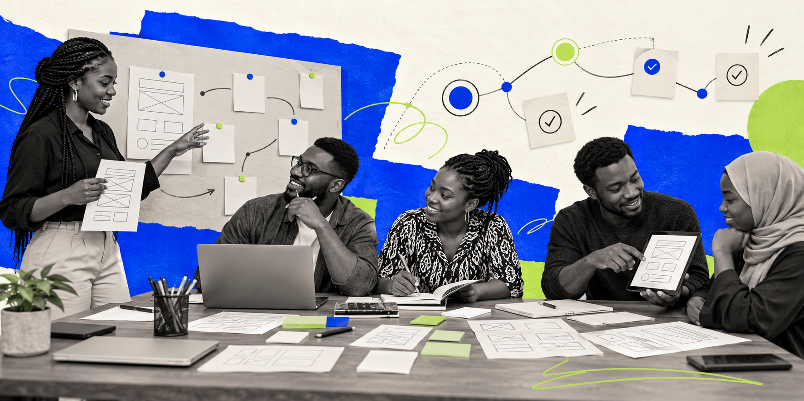

Technical Career Discovery
Six Future Builder Series sessions explored technology pathways, practical learning strategies and the skills behind different roles.
Explore the SessionsAlteturia Hub brings guided learning, mentorship and community together to help emerging technology professionals develop practical skills. Through workshops, challenges and collaborative projects, we create opportunities to learn, contribute and put ideas into practice.
Our goal is to help people grow into confident, capable builders who can apply their skills to real problems and keep learning together.
Explore a few of the conversations, sessions and challenges that bring our community together.
Six Future Builder Series sessions explored technology pathways, practical learning strategies and the skills behind different roles.
Explore the SessionsA 30-day challenge to learn or build, document progress and share your work. Participants choose one track: the Learning Track or the Builder Track.
Explore the ChallengeA community webinar on how AI is changing technology careers and how learners can develop practical, relevant skills.
Explore the Event
Learn with the community, ask about mentorship, contribute to practical work, volunteer or explore an educational partnership. Availability and opportunities are shared through Hub.